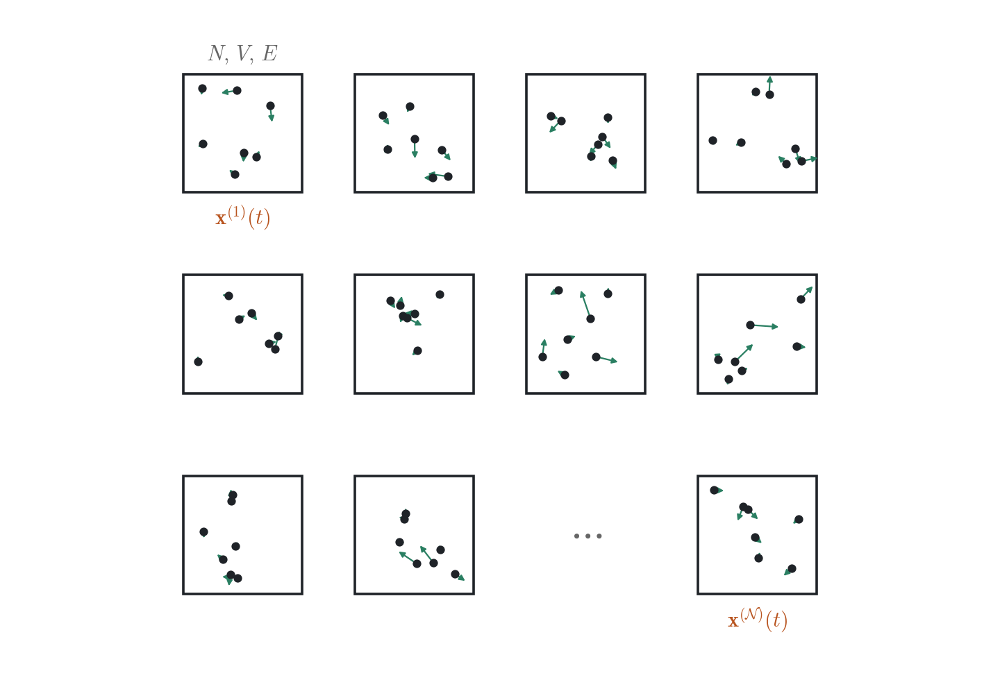
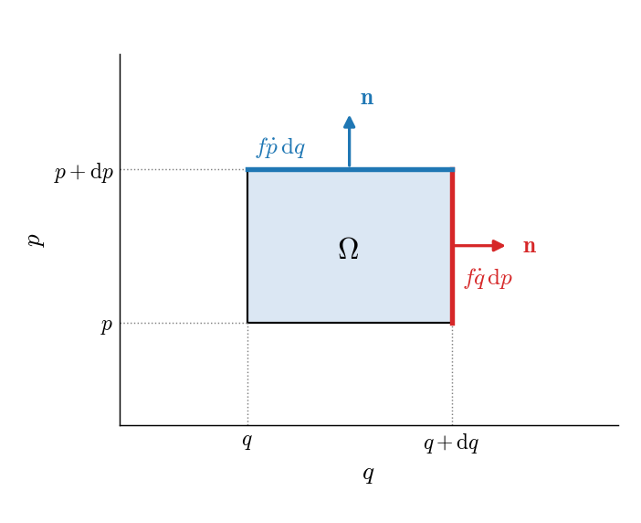
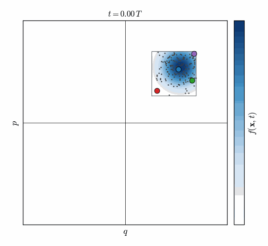
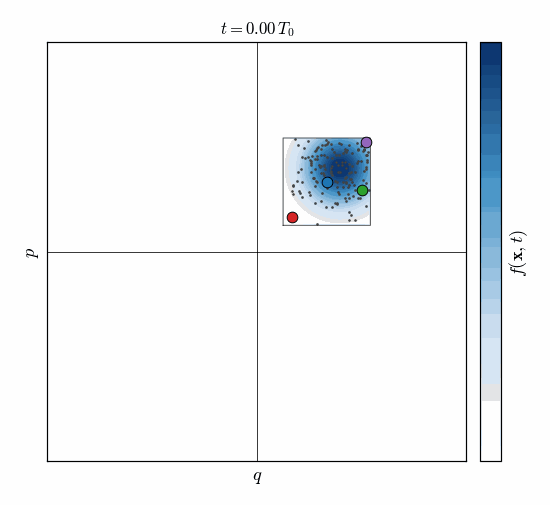
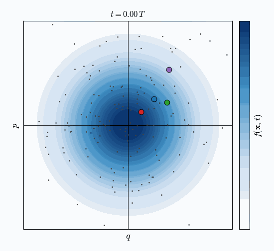
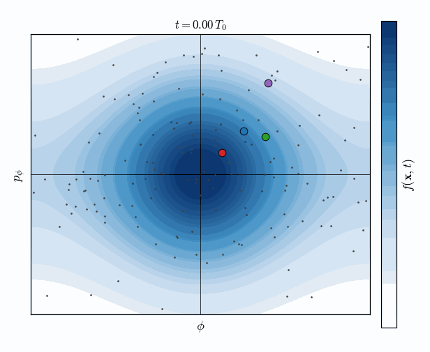

Basic statistical mechanics#
After deriving the equations of motion for a system of \(N\) classical particles, we would next like to solve for their trajectories and use them to evaluate thermodynamic properties of a macroscopic system, such as the temperature, energy, pressure, etc. If we can connect an observable macroscopic property \(A\) to some function of the microstate of the system, \(a(\textbf{x})\), we might associate the measured value of \(A\) with a time average, denoted by \(\bar{a}_{\tau}\) and defined as
where \(\tau\) is some long time scale compared to the molecular or atomic motion.
But now we find ourselves at an impasse. It is entirely clear what rules determine the evolution of the system in time, but solving the equations analytically is impossible. A numerical solution is similarly unfeasible for \(\sim 10^{23}\) particles, as we discussed in the previous chapter. The core idea of statistical mechanics is to provide an alternative approach to obtain macroscopic thermodynamic observables.
Ensembles#
It was J.W. Gibbs that realized that thermodynamic macroscopic properties are not very sensitive to the details of the specific microscopic state of the system. Consider for example the temperature. You have learned in a preceding statistical thermodynamics course that each momentum degree of freedom contributes \(\frac{1}{2} k_B T \) to the average thermal kinetic energy (the equipartition theorem). Thus, the temperature can be obtained from the average kinetic energy of the system. But there are many ways to choose the momenta of the particles such that the average kinetic energy is the same. In other words, the temperature is insensitive to the specific microstate of the system, as long as it gives the same average kinetic energy.
Following this reasoning, and to make progress in connecting microscopic properties with thermodynamic observables, Gibbs introduced the concept of an ensemble. An ensemble is a collection of \(\mathcal{N}\) systems that obey the same microscopic interactions and are characterized by a common set of three thermodynamic properties, such as the number of particles \(N\), the volume \(V\), the total energy \(E\), the temperature \(T\), the pressure \(P\) or the chemical potential \(\mu\). Each system in the ensemble evolves in time from different initial conditions and is characterized by a unique microscopic state defined by its path in phase space, \(\textbf{x}(t)\), defined in Eq. (7). The entire ensemble can then be represented as a “cloud” of points in phase space.


Fig. 3 An ensemble: \(\mathcal{N}\) copies of the same system, with the same \(N\), \(V\) and \(E\), each in its own microstate \(\textbf{x}^{(k)}(t)\).#
We define the function \(f(\textbf{x},t)\), called the phase space distribution function, as the probability density of observing a system in the ensemble in a specific microstate at time \(t\). Since it is a probability density, it has to fulfill the properties:
In other words, \(f(\textbf{x},t) \, \mathrm{d} \textbf{x}\) represents the probability that a system from the ensemble is in the volume element between \(\textbf{x}\) and \(\textbf{x}+\mathrm{d}\textbf{x}\) at time \(t\) (or, alternatively, the fraction of systems therein).
Gibbs then postulated that instead of using the time average of Eq. (22), macroscopic properties can be obtained by freezing the ensemble at some time instance and taking the average of the desired observable over all the systems, called an ensemble average. More formally, the ensemble average, denoted as \(\langle a \rangle_f\), is defined as
Note the difference between Eqs. (22) and (24), the former is an integral over time while the latter is an integral over phase space. This distinction is important enough that we have used a bar to denote the time average but brackets to denote the ensemble average. Before moving forward, and discussing what we can do with ensemble averages, we will briefly investigate an important property of the phase space distribution function, described by the Liouville equation.
Active learning
For a single particle of mass \(m\) in a harmonic trap of frequency \(\omega_0\), calculate the equilibrium average of the total energy in the canonical ensemble.
Hint: In that case,
Solution
The ensemble average is
The Hamiltonian is
After doing some Gaussian integrals, we get:
Liouville equation#
For clarity, we will prove the Liouville equation for a single particle, for which \( f(\textbf{x},t) = f(q,p,t) \), but it can be generalized to \(N\) particles. The theorem states that the phase space distribution function is conserved along the trajectory, i.e., that
The proof has two steps. The first uses the equations of motion, the second only counts systems.
Step 1: a property of Hamilton’s equations#
Hamilton’s equations assign to every point \(\textbf{x}=[q,p]\) of phase space a velocity \(\dot{\textbf{x}}=[\dot{q},\dot{p}]\), which tells us where a system at that point goes next. This velocity has a special property.
Active learning
Show that
Hint: Use Hamilton’s equations.
Solution
Using Hamilton’s equations, Eq. (13), \(\dot{q} = \partial \mathcal{H} / \partial p\) and \(\dot{p} = - \partial \mathcal{H} / \partial q\), so
In other words, the divergence of the velocity in phase space vanishes, \(\nabla \cdot \dot{\textbf{x}} = 0\). This is the only place in the proof where the specific form of the equations of motion enters. Everything that follows holds for any dynamics with this property.
Step 2: counting systems#
We now consider some volume in phase space \(\Omega\) and define the number of systems in the ensemble whose microstate is in this volume as
The rate of change of the number of systems in \(\Omega\) is given by
But, equivalently, since systems are neither created nor destroyed, the number in \(\Omega\) changes only when systems cross its boundary.
The flux of systems leaving the volume through a surface element \(\mathrm{d} \mathcal{A}\) can be integrated to give the rate,
where \(\textbf{n}\) is the unit vector normal to the surface element, pointing outward. For a single particle, phase space is the \((q,p)\) plane, \(\Omega\) is a region in it, \(\mathcal{A}\) is the closed curve bounding it and \(\mathrm{d} \mathcal{A}\) is a line element of that curve. Only the component of the velocity \(\dot{\textbf{x}} = [\dot{q},\dot{p}]\) along \(\textbf{n}\) carries systems out of \(\Omega\). For example, for the small rectangle in Fig. 4, the right side contributes \(f \dot{q} \, \mathrm{d}p\) to the integral and the top side \(f \dot{p} \, \mathrm{d}q\).


Fig. 4 A small rectangle \(\Omega\) in phase space with sides \(\mathrm{d}q\) and \(\mathrm{d}p\). The flux of systems through its right side, where the outward normal \(\textbf{n}\) is along \(q\), is \(f \dot{q} \, \mathrm{d}p\), and through its top side \(f \dot{p} \, \mathrm{d}q\).#
We can now use the divergence theorem, which turns the integral over the boundary curve into an integral over the region,
Eq.(29) and Eq. (27) should be equal for every volume element \(\mathrm{d} q \, \mathrm{d} p \), giving
Active learning
Show that the term in square brackets can be written as
Solution
The term in square brackets can be rearranged
and the first term is zero by Eq. (26).
Based on the solution of the above exercise, Eq. (30) reduces to Eq. (25), which completes the proof of the Liouville equation.
Using the definition of the Poisson bracket between \(f\) and the Hamiltonian, Eq. (16), we can write
which leads to another useful form of the Liouville equation,
What the Liouville equation says#
Take one system of the ensemble and follow it along its trajectory \(\textbf{x}(t)\). At every instant, evaluate the phase space distribution at the point where this system is, \(f(\textbf{x}(t),t)\). The derivative in Eq. (25) is the rate of change of this quantity: the first term accounts for the explicit dependence of \(f\) on time, the other two for the motion of the system. The Liouville equation says that it is conserved along the dynamics of each system,
This does not mean that \(f\) does not change in time. The distribution as a whole moves in phase space, as Fig. 5 shows, and in general also changes its shape, as Fig. 6 shows.


Fig. 5 An ensemble of harmonic oscillators (\(m = \omega_0 = 1\)) whose distribution \(f\) (color) starts in a square in phase space, peaked towards one corner. A few systems of the ensemble are shown as points, four of them with their trajectories. The distribution rotates, but \(f\) along each trajectory does not change.#


Fig. 6 The same for an ensemble of pendulums, \(\mathcal{H} = \frac{p_\phi^2}{2 m l^2} + m g l (1 - \cos{\phi})\) as in the previous chapter, with \(m = l = g = 1\). The period depends on the energy, so the distribution changes its shape, but not its area. The purple system starts with the highest energy and ends up in the tail.#
Phase space incompressibility#
A second consequence of the property of Hamilton’s equations shown in Step 1 above, Eq. (26), concerns volumes in phase space rather than densities. We denote an initial point in phase space as \(\textbf{x}_0 = [q_0,p_0]\). The point in phase space that results from the dynamics starting from \(\textbf{x}_0\) after time \(t\) is \(\textbf{x}_t = [q_t,p_t]\). In the previous chapter, we learned that the trajectory is uniquely defined by the initial conditions, meaning that \(\textbf{x}_t\) can be written as a function of the initial conditions,
Thus, we can consider the evolution of the trajectory as a coordinate transformation. Assuming we know the function \(g\), we need to evaluate how the volume elements change when we transform from \(\mathrm{d} \textbf{x}_0\) to \(\mathrm{d} \textbf{x}_t\). J. Liouville proved that
i.e., that the phase space volume element is conserved along the trajectory. Its shape might change, but not the volume. In Fig. 5, the square of initial conditions rotates, but its area is conserved.
Why is it important? We will use it in the next section. There, we will postulate that at equilibrium all microstates of an isolated system are equally probable, i.e., that \(f\) is uniform on the surface of constant energy. For this to be consistent with the dynamics, the equations of motion must not squeeze or stretch phase space: a distribution that is uniform at \(t=0\) must remain uniform at later times. Eq. (32) guarantees exactly that. It also tells us that the phase space volume \(\mathrm{d} \textbf{x}\) is the natural measure for counting microstates.
To prove Eq. (32), again for a single particle, we remember that two volume elements of a coordinate transformation are connected through
where the Jacobian \(\mathcal{J}\) is the determinant of the matrix of partial derivatives,
At \(t=0\) the transformation is the identity, so \(J\) is the unit matrix and \(\mathcal{J}=1\). We will show that \(\mathcal{J}\) does not change in time. The time derivative of the first element of \(J\) is
where we used the chain rule, since \(\dot{q}_t = \partial \mathcal{H} / \partial p\) is a function of \(\textbf{x}_t\). Doing the same for the other three elements, we find that the whole matrix obeys
Active learning
Show that for a \(2 \times 2\) matrix obeying \(\frac{\mathrm{d} J}{\mathrm{d}t} = A J\), the determinant obeys
Solution
Writing \(\det{J} = J_{11} J_{22} - J_{12} J_{21}\) and differentiating,
The four entries of \(\dot{J} = A J\) are
Substituting them,
Collecting the terms by the elements of \(A\),
The last two brackets vanish, and the first two are both \(\det{J}\), so
The sum \(A_{11} + A_{22}\) is exactly the quantity of Step 1, Eq. (26), evaluated at \(\textbf{x}_t\). Therefore,
and since \(\mathcal{J}=1\) initially, it stays equal to one along the trajectory, thus proving Eq. (32). For \(N\) particles, \(J\) is a \(6N \times 6N\) matrix and the same result follows from the general identity \(\frac{\mathrm{d}}{\mathrm{d}t} \det{J} = \mathrm{Tr}[A] \det{J}\), where the trace is the sum of \(\frac{\partial \dot{q}_i}{\partial q_i} + \frac{\partial \dot{p}_i}{\partial p_i}\) over all degrees of freedom, each pair cancelling as in Step 1.
The Liouville equation and phase space incompressibility are two sides of the same coin. Consider a small volume element that moves along with the systems in it. Since systems are neither created nor destroyed, and since trajectories never cross, the number of systems in it, \(f \, \mathrm{d} \textbf{x}\), is constant. The Liouville equation says that the first factor is constant along the trajectory, incompressibility says that the second one is. Given the first, the second follows, and vice versa.
If you didn’t follow the derivation, do not worry! You will now demonstrate phase space incompressibility for a simple example.
Active learning
Show that the Eq. (32) is correct for the case of a single particle of mass \(m\) in a harmonic trap of frequency \(\omega_0\). In this case, \(\textbf{x} = [q,p]\). You can use the results of the previous chapter,
Hint: Compute the Jacobian of the coordinate transformation and show that it is unity.
Solution
In the case of a single particle, the Jacobian is a 2x2 matrix,
whose determinant is \(\det{J} = \cos^2{\omega_0 t} + \sin^2(\omega_0 t ) = 1\).
Equilibrium#
Now we go back to the connection we established between the Poisson bracket of the phase space distribution function with the Hamiltonian, through Eq. (31). We define thermodynamic equilibrium as the case when the distribution \(f(\textbf{x})\) does not depend explicitly on time. Eq.(31) then reads
This equation can be solved for \(f(\textbf{x})\) as a function of the Hamiltonian, which we formally denote as
The averages of macroscopic observables will then also be time-independent (you might remember this definition from earlier classes for thermodynamic equilibrium), given by
The denominator \(\mathcal{Z}\) is called the partition function, which is used to normalize the function \(\mathcal{F}\), defined as
To proceed and write specific expressions for \(\mathcal{F}\), we invoke a second postulate, called the hypothesis of equal a priori probabilities. In simple terms, it says that for an ensemble of isolated systems, each characterized by the same number of particles, volume, and total energy, all microstates have equal probability. That is, the phase space distribution is a constant when the energy is between \(E\) and \(E + \delta E\) and zero otherwise.
We saw previously that the classical equations of motion for an isolated system under the influence of conservative forces ensure that the total energy is constant. An ensemble composed of such isolated systems is called the microcanonical ensemble. Since they are characterized by a constant number of particles, volume, and total energy, the ensemble is often denoted by the letters NVE.
According to our second postulate, the equilibrium distribution at the NVE ensemble can be written formally as
and expectation values are obtained through
You have derived in previous courses \(\mathcal{F}(\mathcal{H}(\textbf{x}))\) for other ensembles. We will not repeat this derivation here, but just mention that all of them can be derived from our two postulates by considering the entire ensemble as an isolated system. For an ensemble of systems with a fixed number of particles, volume, and temperature, called the canonical ensemble, \(\mathcal{F}\) is the famous Boltzmann distribution,
and the observables are given by
The canonical ensemble is usually denoted by the letters NVT.
Fig. 7 and Fig. 8 show two examples, an ensemble of harmonic oscillators and an ensemble of pendulums, both in the canonical ensemble. Compare them to Fig. 5 and Fig. 6: the systems move along their trajectories exactly as before, but the distributions do not change in time.


Fig. 7 An ensemble of harmonic oscillators at equilibrium, \(f \propto e^{-\beta \mathcal{H}}\) (color), with a few systems shown as points and four of them with their trajectories. The systems move, the distribution does not.#


Fig. 8 The same for an ensemble of pendulums, over the full circle \(-\pi \le \phi \le \pi\). Systems that go over the top leave the frame on one side and reappear on the other.#